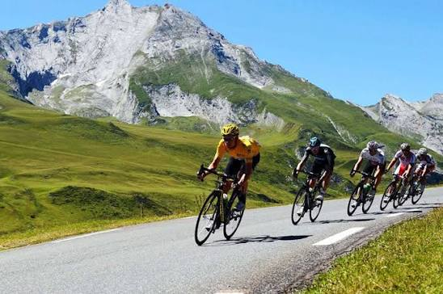
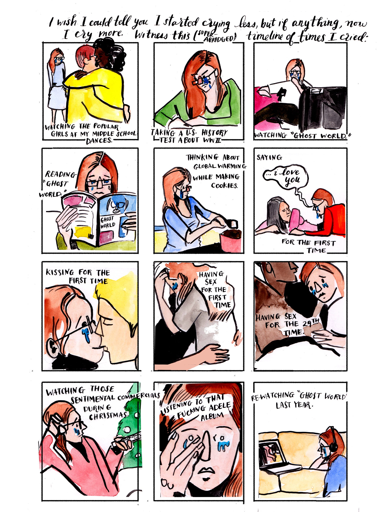

FEATURED
When The Blind Lead The Blind — To Bike The Himalayas
Priti Salian · 8 min read

Priti Salian · 8 min read

anna dorn · ★

Sophie Lucido Johnson · ★

Annie Atherton · ★ 11 min read
Lisa Renee · ★
Maria Bustillos · ★
Blake Gossard · ★
See all featured >

Lindsay Hunter · ★